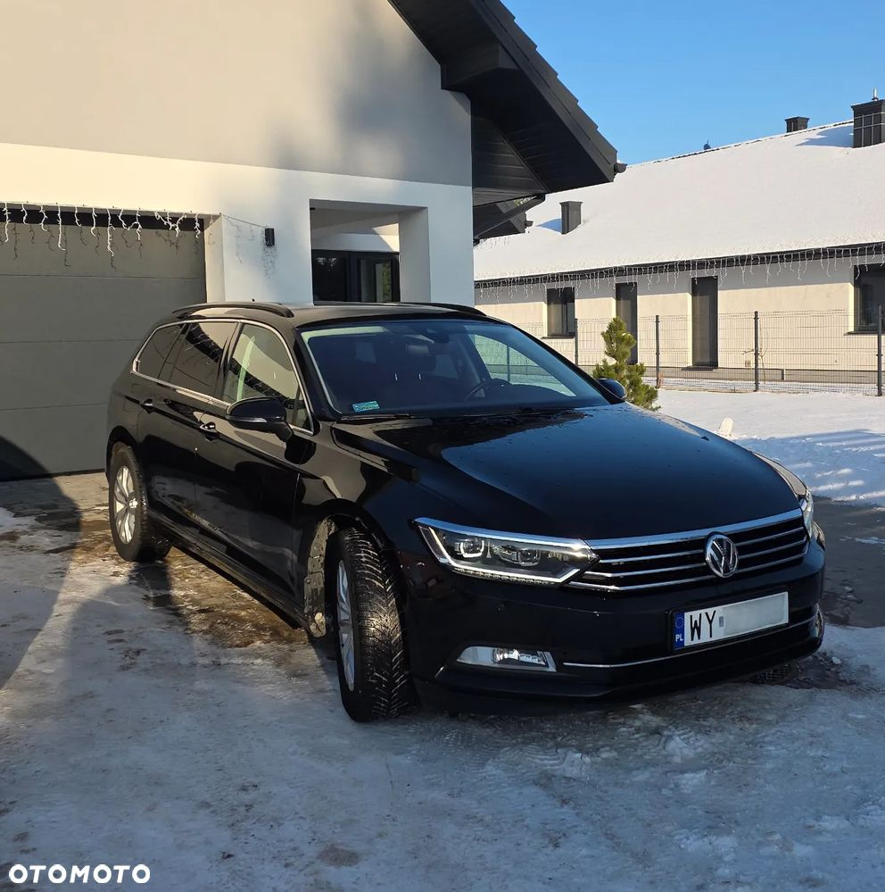
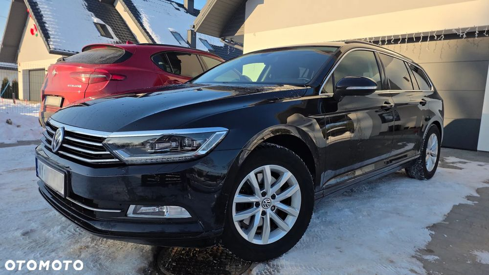
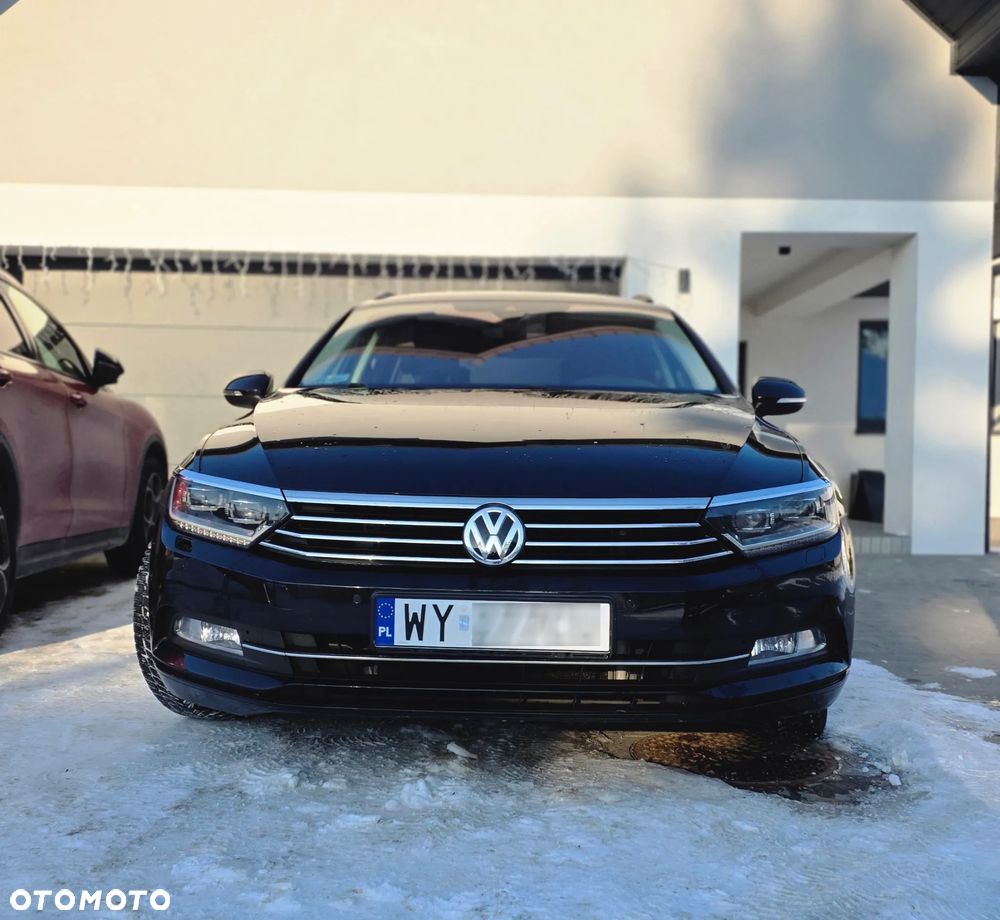

Sprzedam Volkswagena Passata B8 kombi z dynamicznym i oszczędnym silnikiem benzynowym 1.8 TSI o mocy 180 KM oraz automatyczną skrzynią biegów. Samochód pochodzi z 2018 roku, jest zadbany, regularnie serwisowany i gotowy do dalszej eksploatacji.
Sprzedaż na podstawie pełnej faktury VAT 23%, co czyni ofertę idealną dla firm (możliwość odliczenia VAT oraz korzystnego finansowania w leasingu lub kredycie samochodowym).
Dane techniczne:
• Rok produkcji: 2018
• Silnik: 1.8 TSI, 180 KM (dynamiczny, poprawiona generacja)
• Przebieg: 231 000 km (głównie trasy, co widać po stanie wnętrza)
• Wersja wyposażenia: Comfortline
• Kolor: Czarny Deep perłowy
• Status: Samochód krajowy, bezwypadkowy
• Stan techniczny: Samochód jest w pełni sprawny. W ostatnim czasie przeszedł serwis – wymieniono tarcze oraz klocki (przód i tył), co gwarantuje bezpieczeństwo i oszczędność dla nowego właściciela na start, filtry oraz olej. Skrzynia biegów pracuje płynnie, a zawieszenie jest sztywne i niewybite.
Wyposażenie (wersja Comfortline + dodatki):
• Klimatyzacja automatyczna 3-strefowa (Climatronic)
• Komfortowe fotele ErgoComfort z elektryczną regulacją oparcia kierowcy
• Czujniki parkowania przód i tył z wizualizacją na ekranie
• System Front Assist (monitorowanie odległości z funkcją awaryjnego hamowania)
• Tempomat adaptacyjny / ogranicznik prędkości
• Oryginalne alufelgi VW
• Przyciemniane szyby tylne
• System multimedialny z dotykowym ekranem i Bluetooth
• Czujnik deszczu oraz czujnik zmierzchu
• Wielofunkcyjna skórzana kierownica z łopatkami do zmiany biegów
Uwaga: Prawe tylne drzwi są lekko zarysowane - widać to na ostatnim zdjęciu.
Forma sprzedaży: Faktura VAT 23%. Cena brutto: 54 500 PLN Cena netto: 44 308 PLN
Kupujący prywatny jest zwolniony z opłaty skarbowej PCC 2% (oszczędność ok. 1100 zł).
Zapraszam do kontaktu i na jazdę próbną
